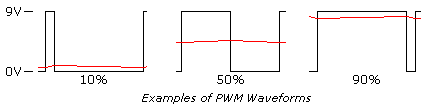
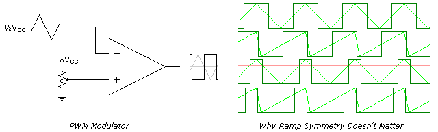
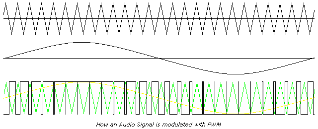
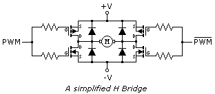
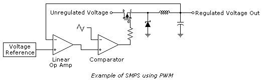

Lecciones de circuitos eléctricos - Volumen III
Capítulo 11
MOTORES DE CC
*** INCOMPLETO ***
Pulse Width Modulation
La modulación de ancho de pulso (PWM) utiliza señales digitales para controlar aplicaciones de energía, además de ser bastante fácil de convertir nuevamente a analógica con un mínimo de hardware.
Los sistemas analógicos, como las fuentes de alimentación lineales, tienden a generar mucho calor ya que son básicamente resistencias variables que transportan mucha corriente. Los sistemas digitales generalmente no generan tanto calor. Casi todo el calor generado por un dispositivo de conmutación se produce durante la transición (que se realiza rápidamente), mientras que el dispositivo no está ni encendido ni apagado, sino en el medio. Esto se debe a que el poder sigue la siguiente fórmula:
P = E I, or Watts = Voltage X Current
Si el voltaje o la corriente están cerca de cero, entonces la potencia estará cerca de cero. PWM aprovecha al máximo este hecho.
PWM puede tener muchas de las características de un sistema de control analógico, en el sentido de que la señal digital puede funcionar libremente. PWM no tiene que capturar datos, aunque existen excepciones con controladores de gama alta.
Uno de los parámetros de cualquier onda cuadrada es el ciclo de trabajo. La mayoría de las ondas cuadradas son del 50%, esta es la norma cuando se habla de ellas, pero no tienen por qué ser simétricas. El tiempo de ENCENDIDO se puede variar completamente entre la señal apagada y completamente encendida, del 0 % al 100 %, y todos los rangos intermedios.
A continuación se muestran ejemplos de ciclos de trabajo de 10%, 50% y 90%. Si bien la frecuencia es la misma para todos, esto no es un requisito.

La razón por la que PWM es popular es simple. Muchas cargas, como las resistencias, integran la potencia en un número que coincide con el porcentaje. La conversión a su valor equivalente analógico es sencilla. Los LED son muy no lineales en su respuesta a la corriente; si le das a un LED la mitad de su corriente nominal, aún obtendrás más de la mitad de la luz que el LED puede producir. Con PWM el nivel de luz producido por el LED es muy lineal. Los motores, de los que hablaremos más adelante, también responden muy bien al PWM.
Una de las varias formas en que se puede producir PWM es mediante el uso de una forma de onda en diente de sierra y un comparador. Como se muestra a continuación, la onda en diente de sierra (u onda triangular) no tiene por qué ser simétrica, pero la linealidad de la forma de onda es importante. La frecuencia de la forma de onda en diente de sierra es la frecuencia de muestreo de la señal.

Si no hay ningún cálculo involucrado, PWM puede ser rápido. El factor limitante es la respuesta de frecuencia de los comparadores. Puede que esto no sea un problema, ya que algunos de los usos son a velocidad bastante baja. Algunos microcontroladores tienen PWM integrado y pueden grabar o crear señales según demanda.
Los usos de PWM varían ampliamente. Es el corazón de los amplificadores de audio de Clase D. Al aumentar los voltajes, se aumenta la salida máxima y, al seleccionar una frecuencia más allá del oído humano (normalmente 44 Khz), se puede utilizar PWM. Los altavoces no responden a la frecuencia alta, sino que duplican la frecuencia baja, que es la señal de audio. Se pueden utilizar velocidades de muestreo más altas para una fidelidad aún mejor, y 100 Khz o mucho más no es algo inaudito.

Otra aplicación popular es el control de velocidad del motor. Los motores como clase requieren corrientes muy altas para funcionar. Poder variar su velocidad con PWM aumenta bastante la eficiencia del sistema total. PWM es más eficaz para controlar la velocidad del motor a bajas RPM que los métodos lineales.
PWM se utiliza a menudo junto con un H-Bridge. Esta configuración se llama así porque se parece a la letra H y permite duplicar el voltaje efectivo en la carga, ya que la fuente de alimentación se puede conmutar en ambos lados de la carga. En el caso de cargas inductivas, como motores, se utilizan diodos para suprimir los picos inductivos, que pueden dañar los transistores. La inductancia de un motor también tiende a rechazar el componente de alta frecuencia de la forma de onda. Esta configuración también se puede utilizar con altavoces para amplificadores de audio Clase D.
Si bien es básicamente preciso, este esquema de un puente H tiene un defecto grave: es posible que, durante la transición entre los MOSFET, ambos transistores en la parte superior e inferior estén encendidos simultáneamente y reciban todo el peso de lo que la fuente de alimentación puede proporcionar. Esta condición se conoce comocruzar rápidamente, y puede suceder con cualquier tipo de transistor utilizado en un H-Bridge. Si la fuente de alimentación es lo suficientemente potente, los transistores no sobrevivirán. Se maneja mediante el uso de controladores delante de los transistores que permiten que uno se apague antes de permitir que el otro se encienda.

Las fuentes de alimentación de modo conmutado (SMPS) también pueden utilizar PWM, aunque también existen otros métodos. Agregar topologías que utilizan la energía almacenada tanto en inductores como en condensadores después de los principales componentes de conmutación puede aumentar bastante la eficiencia de estos dispositivos, superando el 90% en algunos casos. A continuación se muestra un ejemplo de dicha configuración.

La eficiencia en este caso se mide como potencia. Si tiene un SMPS con 90% de eficiencia y convierte 12 VCC a 5 VCC a 10 amperios, el lado de 12 V consumirá aproximadamente 4,6 amperios. El 10% (5 vatios) no contabilizado aparecerá como calor residual. Si bien es un poco más ruidoso, este tipo de regulador funcionará mucho más frío que su contraparte lineal.
Contributors
Los contribuyentes a este capítulo se enumeran en orden cronológico de sus contribuciones, desde el más reciente hasta el primero. Consulte el Apéndice 2 (Lista de colaboradores) para fechas e información de contacto.
Bill Marsden(Febrero 2010) Autor de la sección “Modulación de ancho de pulso”.
Lecciones en circuitos eléctricoscopyright (C) 2000-2023 Tony R. Kuphaldt, según los términos y condiciones delCC BY License.